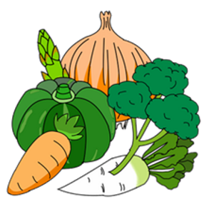
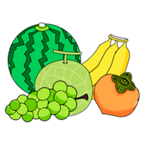
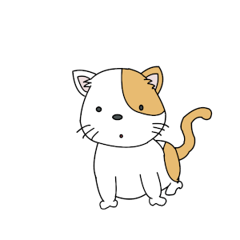

現在の言語: 日本語 |
タロットへようこそ |
[説明] | |
タロット占いしてみませんか？ [手順] (1) 「スタート」ボタンを選択します。 (2) 78枚のカードが表示されます。 任意の1枚を選択してください。 表示されているカードをシャッフルしたい場合は「シャッフル」ボタンを選択してください。 (3) 選択したカードの結果が表示されます。 再度、占いをしたい場合は「もう一度」ボタンを選択してください。 | |
|  |
野菜うらない |
|  |
果物うらない |
|  |
動物(いきもの)うらない |
| 著作権情報 |
| ホームページおよびアプリ等に掲載されている情報等については、いかなる保障もいたしません。 ホームページおよびアプリ等を通じて入手したいかなる情報も複製、販売、出版または使用させたり、 または公開したりすることはできません。 当方は、ホームページおよびアプリ等を利用したいかなる理由によっての障害等が発生しても、 その結果ホームページおよびアプリ等を利用された本人または他の第三者が被った損害について 一切の責任を負わないものとします。 |